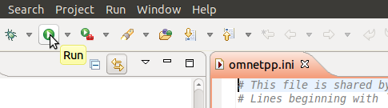
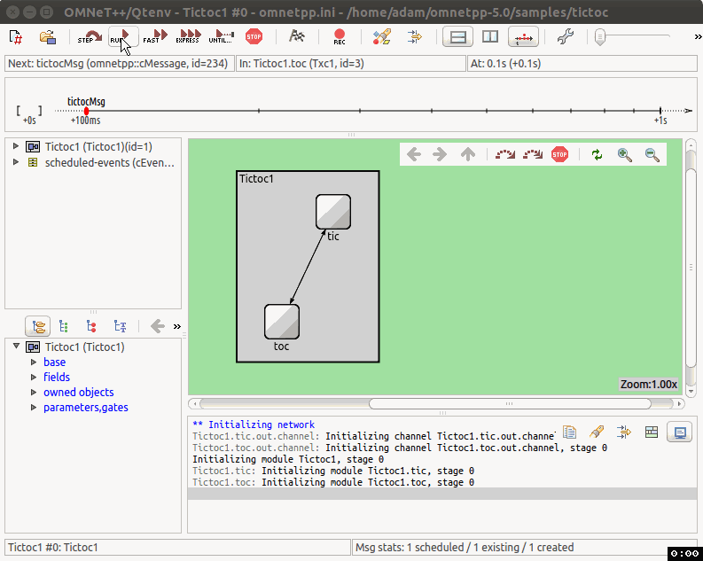
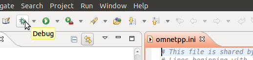
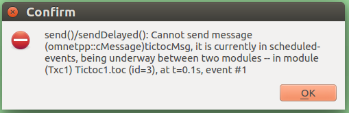
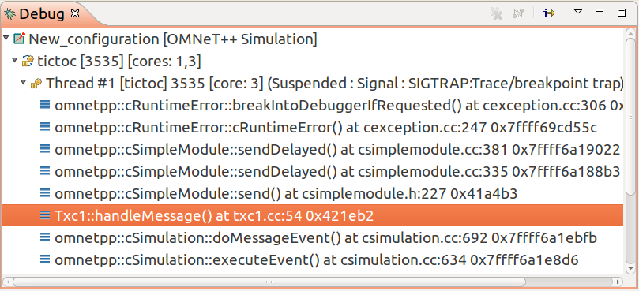
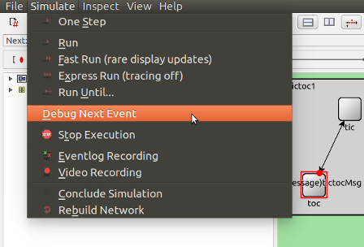
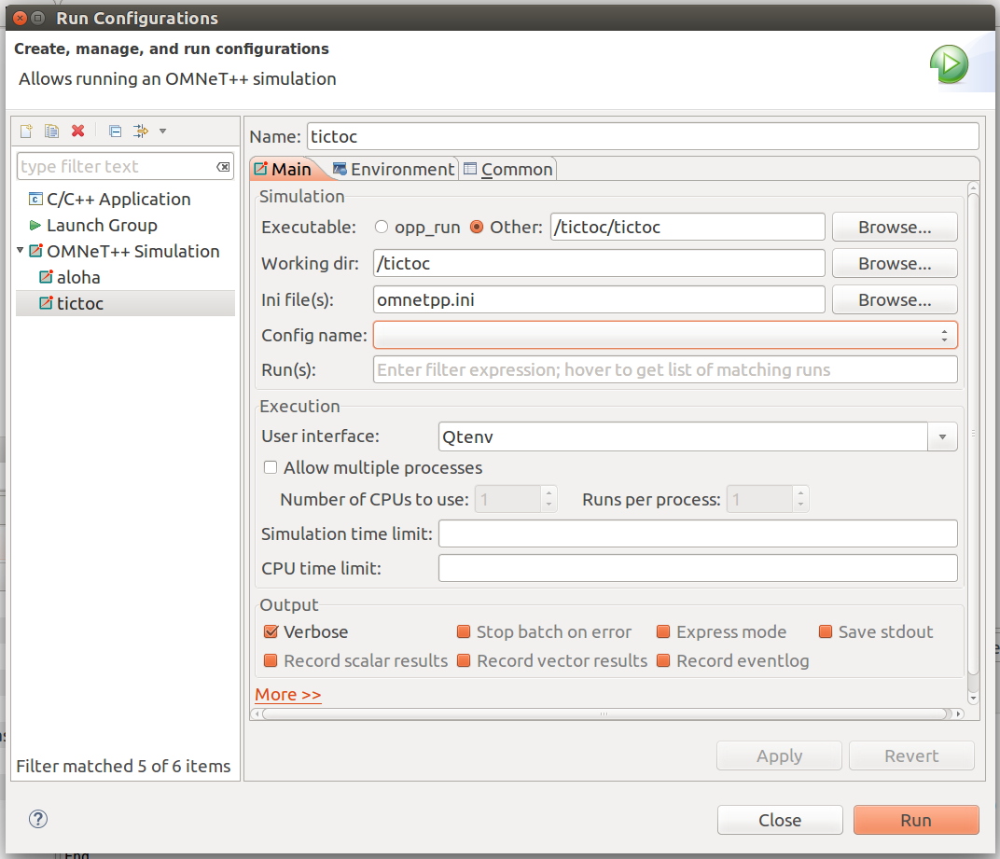

Part 2 - Running the Simulation¶
2.1 Launching the simulation program¶
Once you complete the above steps, you can launch the simulation by selecting %omnetpp.ini (in either the editor area or the Project Explorer), and pressing the Run button.

The IDE will build your project automatically. If there are compilation errors, you need to rectify those until you get an error-free compilation and linking. You can manually trigger a build by hitting choosing Project -> Build All from the menu, or hitting Ctrl+B.
Note
If you want to build the simulation executable on the command-line,
create a Makefile using the opp_makemake
command, then enter make to build the project. It will produce
an executable that can be run by entering ./tictoc.
2.2 Running the simulation¶
After successfully building and launching your simulation, you should see a new GUI window appear, similar to the one in the screenshot below. The window belongs to Qtenv, the main OMNeT++ simulation runtime GUI. You should also see the network containing tic and toc displayed graphically in the main area.
Press the Run button on the toolbar to start the simulation. What you should see is that tic and toc are exchanging messages with each other.

The main window toolbar displays the current simulation time. This is virtual time, it has nothing to do with the actual (or wall-clock) time that the program takes to execute. Actually, how many seconds you can simulate in one real-world second depends highly on the speed of your hardware and even more on the nature and complexity of the simulation model itself.
Note that it takes zero simulation time for a node to process the message. The only thing that makes the simulation time pass in this model is the propagation delay on the connections.
You can play with slowing down the animation or making it faster with the slider at the top of the graphics window. You can stop the simulation by hitting F8 (equivalent to the STOP button on the toolbar), single-step through it (F4), run it with (F5) or without (F6) animation. F7 (express mode) completely turns off tracing features for maximum speed. Note the event/sec and simsec/sec gauges on the status bar of the main window (only visible when the simulation is running in fast or express mode).
Exercise
Explore the GUI by running the simulation several times. Try Run, Run Until, Rebuild Network, and other functions.
You can exit the simulation program by clicking its Close icon or choosing File -> Exit.
2.3 Debugging¶
The simulation is just a C++ program, and as such, it often needs to be debugged while it is being developed. In this section we'll look at the basics of debugging to help you acquire this vital task.
The simulation can be started in debug mode by clicking the Debug button on the IDE's main toolbar.

This will cause the simulation program to be launched under a debugger (usually gdb). The IDE will also switch into "Debug perspective", i.e. rearrange its various panes and views to a layout which is better suited to debugging. You can end the debugging session with the Terminate button (a red square) on the toolbar.
Runtime errors¶
Debugging is most often needed to track down runtime errors. Let's try it!
First, deliberately introduce an error into the program. In
, duplicate the send() line inside
handleMessage(), so that the code looks like this:
void Txc1::handleMessage(cMessage *msg) { //... send(msg, "out"); // send out the message send(msg, "out"); // THIS SHOULD CAUSE AN ERROR }
When you launch the simulation in normal mode (Run button) and try to run it, you'll get an error message like this:

Now, run the simulation in Debug mode. Due to a debug-on-errors option
being enabled by default, the simulation program will stop in the debugger.
You can locate the error by examining the stack trace (the list of nested
function calls) in the Debug view:

You can see that it was OMNeT++'s breakIntoDebuggerIfRequested() method that
activated the debugger. From then on, you need to search for a function that
looks familiar, i.e. for one that is part of the model. In our case, that is
the "Txc1::handleMessage() at txc1.cc:54" line. Selecting that line will
show you the corresponding source code in the editor area, and lets you
examine the values of variables in the Variables view. This information
will help you determine the cause of the error and fix it.
Crashes¶
Tracking down crashes i.e. segfaults is similar, let's try that as well.
Undo the previous source code edit (remove the duplicate send() line),
and introduce another error. Let's pretend we forgot to create the message
before sending it, and change the following lines in initialize()
cMessage *msg = new cMessage("tictocMsg"); send(msg, "out");
to simply
cMessage *msg; // no initialization! send(msg, "out");
When you run the simulation, it will crash. (You will get an error message similar to "Simulation terminated with exit code: 139"). If you launch the simulation again, this time in Debug mode, the crash will bring you into the debugger. Once there, you'll be able to locate the error in the Debug view and examine variables, which will help you identify and fix the bug.
Breakpoints¶
You can also manually place breakpoints into the code. Breakpoints will stop execution, and let you examine variables, execute the code line-by-line, or resume execution (until the next breakpoint).
A breakpoint can be placed at a specific line in the source code by double-clicking on the left gutter in the editor, or choosing Toggle Breakpoint from the context menu. The list of active (and inactive) breakpoints can be examined in the Breakpoints view.
Exercise
Experiment with breakpoints! Place a breakpoint at the beginning of
the handleMessage() method function, and run the simulation. Use appropriate
buttons on the toolbar to single-step, continue execution until next time the
breakpoint is hit, and so on.
Debug next event¶
If you did the previous exercise, you must have noticed that the breakpoint was triggered at each and every event in the Txc1 simple module. In real life it often occurs that an error only surfaces at, say, the 357th event in that module, so ideally that's when you'd want to start debugging. It is not very convenient to have to hit Resume 356 times just to get to the place of the error. A possible solution is to add a condition or an ignore-count to the breakpoint (see Breakpoint Properties in its context menu). However, there is a potentially more convenient solution.
In Qtenv, use Run Until to get to the event to be debugged. Then,
choose Simulation -> Debug Next Event from the menu. This will trigger
a breakpoint in the debugger at the beginning of handleMessage() of the
next event, and you can start debugging that event.

2.4 The Debug/Run dialog¶
Let us return to launching simulations once more.
When you launch the simulation program with the Run or Debug buttons on the IDE toolbar, settings associated with the launch are saved in a launch configuration. Launch configurations can be viewed in the Run/Debug Configurations dialog which can be opened e.g. by clicking the little down arrow next to the Run (Debug) toolbar button to open a menu, and choosing Run (Debug) Configurations... in it. In the same menu, you can also click the name of a launch configuration (e.g. tictoc) while holding down the Ctrl key to open the dialog with the corresponding configuration.
The dialog allows you activate various settings for the launch.

2.5 Visualizing on a Sequence Chart¶
The OMNeT++ simulation kernel can record the message exchanges during the simulation into an event log file. To enable recording the event log, check the Record eventlog checkbox in the launch configuration dialog. Alternatively, you can specify record-eventlog = true in omnetpp.ini, or even, use the Record button in the Qtenv graphical runtime environment after launching,
The log file can be analyzed later with the Sequence Chart tool in the IDE.
The results directory in the project folder contains the .elog file.
Double-clicking on it in the OMNeT++ IDE opens the Sequence Chart tool,
and the event log tab at the bottom of the window.
Note
The resulting log file can be quite large, so enable this feature only if you really need it.
The following figure has been created with the Sequence Chart tool, and shows how the message is routed between the different nodes in the network. In this instance the chart is very simple, but when you have a complex model, sequence charts can be very valuable in debugging, exploring or documenting the model's behaviour.